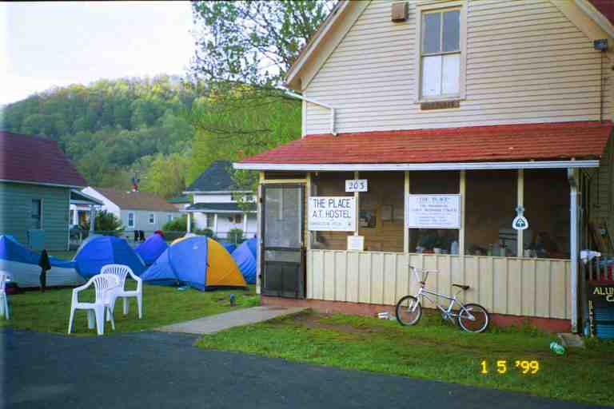
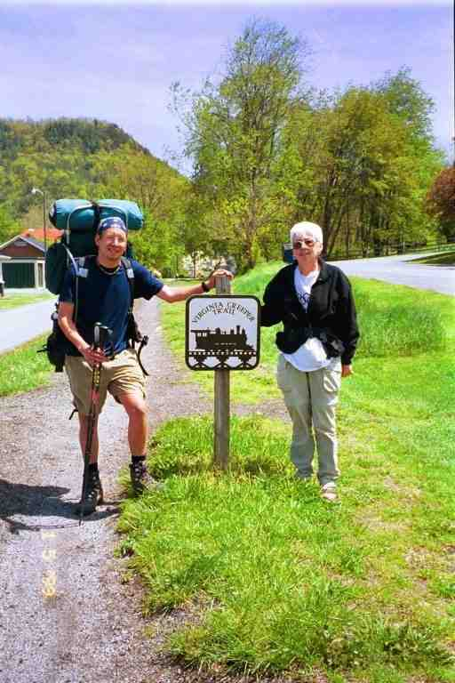
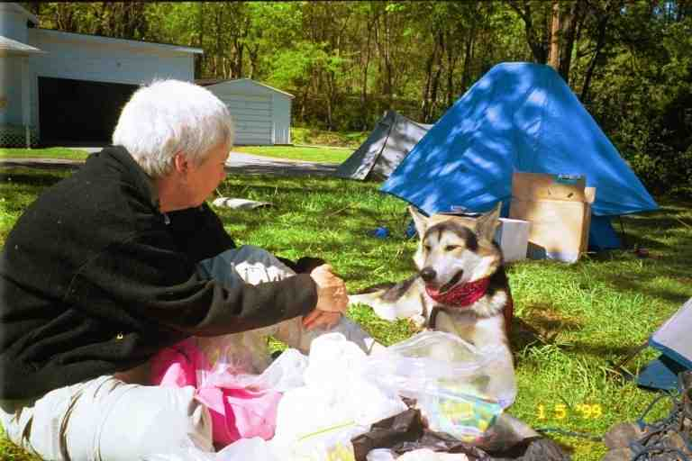
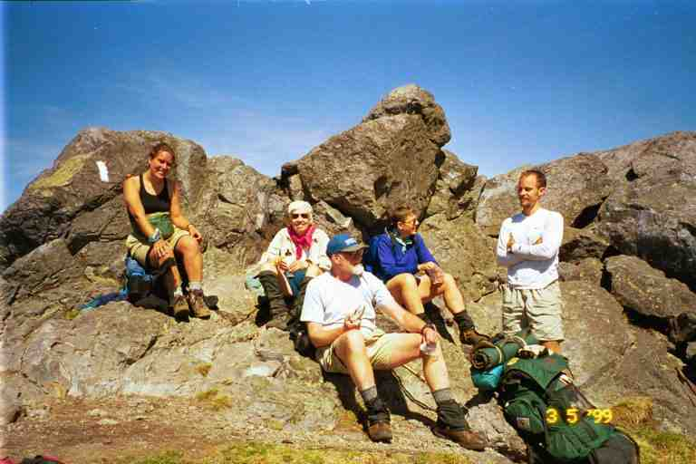
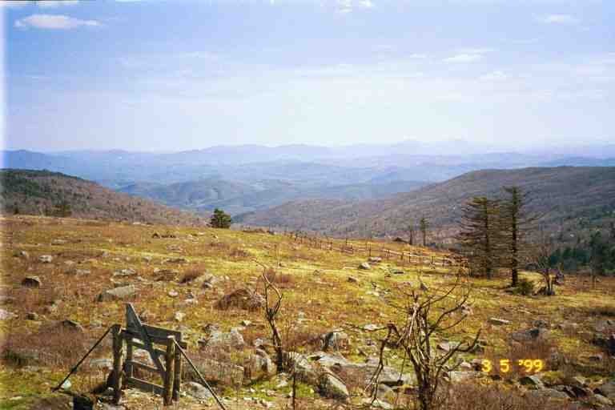

On Friday April 30, we covered the 18.3 miles to Damascus in 8.5 hours. This section is called the Tennessee Turnpike. We wandered through lush wet vegetation in light woods, with a few climbs, until lunch at Abingdon shelter. We crossed from Tennessee into Virginia, our fourth state, during the afternoon. There was then a long gentle descent to town on a warm wide trail where every twig seems to have sprouted little leaves. The colour of new leaves was all around us.
We came out of the woods on a residential street and followed the blazes to town. On the way we came to a city park with a small wooden arch welcoming hikers, where we met JUNKER and his van and a lady who had abandoned her hike and was now slacking LITTLE JOHN in her van.
On the sidewalk downtown, we were stopped by an older couple who asked if we were MA and PA. They turned out to be BROOKS' parents (although I thought they were LAUREL's parents). They repeated BROOKS' invitation to come and visit them when we got to Pearisburg. We also met BLUEBERRY and SOULMAN who had found jobs in town because they had run out of money ( they apparently had started with only $600 between them).
We headed to The Place, a hostel situated in a residential area, one block from Main street. When we arrived, there were a number of hikers lounging on the grass and at a picnic tables and on chairs in the parking lot. SEMPER FI DREW was here with GOLDILOCKS and seemed very happy. During the past two weeks he had spoken often of GOLDILOCKS, a hiker he had met early in the hike. She had temporarily left the trail because of a foot problem and was to meet him here in Damascus.
The hostel is an old two story home which can hold about 25 people in bunk beds which have been set up in the four bedrooms upstairs and the dining room on the main floor. There is a living room in the front with a large selection of reading material, and a kitchen at the back with an adjoining screened in porch where hikers can cook on their camp stoves. There were a few available beds but we decided to set up our tent on the side lawn, with the dozen tents which were already there. Strangely, all the tents were Sierra Design and we wondered if our Kelty would fit in such a hi-class neighbourhood. (See the first attached picture)

The hostel belongs to the local Methodist Church but there is no full-time person on site to run it. Signs request that the users help keep the hostel clean, and a donation box suggests at least $2 per night. It accommodates hikers as well as users of the Virginia Creeper bicycle trail and a national bike trail which both pass nearby.
There were dozens of hikers in town, most staying at The Place but some at a few Bed & Breakfasts. The large crowd at The Place included some Hiker Trash who are usually former thru hikers who hang around the hikers absorbing the atmosphere and offering rides and opportunities to slackpack. Two Hiker Trash here were LONE WOLF and MAULA (sp), who I remember as having provided rides to two yellow blazers who were here: ALASKA and VULTURE CHOW (we had not seen her since just after Hiawassee GA).
Damascus is the home of Trail Days, an annual weekend festival of the AT which takes place in mid-May. ( http://www.traildays.com/). Every year, past year hikers return to Trail Days to renew friendships and current year hikers arrange rides to get back to Damascus to celebrate. The activities include displays and demonstrations by equipment manufacturers, meals provided by service organizations, slide shows and other presentations by past year hikers and a talent show. On the Sunday, there is a hiker parade where hikers march behind banners for their year (for example: CLASS OF 1998). The hikers spray the crowd lining the street with water guns while the crowd throws water balloons at the marchers.
We took the Saturday off and had a good time but the stay in town was not as relaxing as we would have like because of the running around. Both nights in Damascus we had supper at Quincy's the only real restaurant in town. It was the first establishment we had met on the trail which served alcohol. All the previous towns were dry, meaning that the only alcohol was beer and wine available at grocery stores. We had a buffet one night with a pitcher of beer and a salad bar the next night. We met a couple near our age who were starting out going north from Damascus, having hiked here from Springer Mountain last year. They were SINGLE TRACK and CARIBBEAN QUEEN from the Atlanta area. They would be doing the first section to Atkins with friends before proceeding on alone.
Quincy's had two rooms, a dining room and a tavern style restaurant where most young hikers hung out. There was a little bit of a party going on that night in the tavern to drown everyone's sorrows after finding out that PHIN was leaving the trail. She missed her home and had asked GOAT to come and get her. RAINDANCER was particularly upset at the news as was SONGBIRD who had been friends with her for years.
We would also miss her, especially her dry sense of humour. I remember her telling me exaggerated stories of the day's memorable events with a twinkle in her eye. I remember one day deep in the woods when we had seen a number of tough looking young men on trail bikes and ATV's crossing our path in the woods without seeing us (luckily). PHIN and SONGBIRD said they also had seen them and had warned them that they were not allowed to drive on the AT. They made a date to meet them in town for beer to discuss the matter. Of course the story was not true.
It was quite a party, judging by the late arrivals back at the hostel that night. According to SINGLE MALT, there was an even bigger party a few days later when the hikers nearly drank Quincy's out of beer (three kegs worth of draft I believe).
We started our first full day in town with breakfast (of course I had biscuits and gravy) at Cowboys, a little restaurant in a convenience store at a gas station about half a mile from The Place. There was a little kitchen area in the store where one could order items from the heat trays and bring them to eat in the adjacent eating area. We also had lunch here and breakfast on the way out of town on the last day. The owner came to see us after one meal and told us that the strawberry jam was home-made by his family from wild berries that they picked. He also said that they made their own apple butter. When we said we did not know apple butter, he left and came back with two hot biscuits and some apple butter. It was really good but what was even better was the hospitality accorded to us and the other hikers by this gentleman (there is a picture of him under the name COWBOYS in the hiker directory at www.trailjournals.com).
We then went to the library to check our email and to look at our first trail pictures online. CHICKPEA and HONEYDO showed us their website (http://pages.nyu.edu/~kmc235/) with their individual journals. We then got our laundry and went to the laundromat, across the street from Cowboys, where we met SONGBIRD, PHIN, and RAINDANCER who proudly showed off a print-out of her journal from trailplace.com and pointed out the sections that referred to MA and PA.
As you can see, everywhere in town we were surrounded by hikers. There was always a large group at The Place, often old trail acquaintances catching up on each other's hikes. We took a picture of Seabass who was going to take the Creeper trail out of town. We spent some time chatting with PA DOG and COURT DOG who were relaxing on the swing hanging from the front porch. I spent some time reading on the swing and we later purchased most of our supplies at the dollar store. On the advice of other hikers, we purchased hamburger helper type products as well as Lipton type pasta and rice mixes. We obtained a couple of blocks of cheese, powdered Gator Ade and fried pies at the small grocery store.. (Picture of MA sorting food at the Place under watchful eye of TIGGER)


***********
Fried PiesRAINDANCER had introduced us to fried pies a few weeks earlier, when we were trying to find something to have for breakfast that would be fast and would not require cooking and clean-up. We had started with oatmeal, which we cooked and which necessitated cleaning our pan and cups, and had switched to instant grits which only required us to boil water but which dirtied our cups.
Fried pies are essentially a fried turnover with a filling (usually fruit) and often a glaze on the pastry. They were sold with the twinkies and other junk snacks. They were easy to find in the south where they came in a waxed paper wrapper and could sometimes be purchased for 25 cents each. When we bought a supply, we had to be careful how we stored them to avoid crushing them. As we went north they became harder to find, were considerably more expensive, came in boxes and were usually made by Hostess. Why did we buy them? Well like I said they were fast and did not need cooking. And more important, each one had at least 480 calories and a high fat content, the two things we looked for in our food purchases.
**************
People NewsLate Saturday afternoon, GOAT came to get PHIN. There was lots of hugging and crying.
FOODBAG was also at the hostel, having arrived on the Thursday. His sister was going to be coming to town on Sunday and he was going to go try to get a pair of hiking shoes in the hope they would be better for his feet than boots. This would be the last time we would see him; as I recall from email we received from him on the trail, he hiked another 160 miles to Pearisburg where he finally had to quit.
SLIPPER's knee finally gave out completely and she luckily managed to get picked up by a waitress from Quincy's who brought her home and then drove her to town. The medical opinion on her knee was not good and she was going home to Colorado for two weeks to recuperate and see her husband whom she missed. She later came back to the trail to join JUNKER's slackpackers, but found that slacking was not for her and left the trail for good. She drove around for a while, doing the trail Bill Bryson style.
******************
We left town on Sunday morning after breakfast at Cowboys. The trail followed a road out of town, joined the Virginia Creeper Trail for a few hundred yards and then crossed the road and climbed a steep hill back into the mountains. We soon passed SINGLETRACK , CARIBBEAN QUEEN and their friends who were all struggling on their first day on the trail.
For a good part of the day, the trail was in the hills above the Virginia Creeper Trail and the rough waters of Whitetop Laurel Creek . The Virginia Creeper trail is a bike and horse trail on an abandoned railway bed. We could not always see the Creeper trail but we would often hear the bikers and the water. During the day, we crossed a number of small footbridges across little streams tumbling down the hill to the creek below. At the 14 mile mark the trail joined the Creeper, then crossed a railway trestle and returned to the woods. We came upon DREW who was preparing to camp next to a pond. He was hoping GOLDILOCKS would show up, but we later found out he shared the spot with HOLLY and DOOLEY that night. We went another mile to Lost Mountain shelter for a 15.8 mile day.
There ended up being quite a crowd that night at the shelter and camped in the open area nearby. I made a large amount of Mac and Cheese. I had added TVP to the boiling water in the pot for protein, and Parkay squeeze margarine for additional flavour and fat. TVP (Textured Vegetable Protein) is a product that vegetarians often add to soups and stews. We had brought about 4 pounds of it with us from home and had been adding it once in a while to our meals. It had no taste of its own and looked a little like ground beef when cooked. We had just exhausted our supply but SONGBIRD had asked her mother to include a package of it for us in her maildrop at the motel at Atkins, about 4 or 5 days away. (It still seems funny to be measuring your progress not in minutes and hours, but in days)
MA and I could not finish our supper, so BIO helped but when he could not complete the task, CHICKPEA cleaned the pot for us. RAINDANCER found that her bag was quite heavy after her latest maildrop so she shared a one pound turkey sausage with everyone. Two others with heavy bags after the stop in Damascus were CHICKPEA (60 pounds) and HONEY DO (45 pounds) who each carried their own food for some reason. HONEY DO seemed to find her pack particularly heavy. I don't blame her, she is only a little person.
Also here this night were ELF, BAADAI and BEARPAW. ELF told everyone about a misadventure earlier in the day above the Creeper trail when she had lost her bandanna. She was crossing a small footbridge which was wet from the spray from the stream when she lost her footing and fell backwards off the bridge. Fortunately, her foot caught in a railing and she was left dangling above the water, the weight of her backpack making it impossible for her to pull herself up. RAINDANCER just stood there staring until ELF yelled at her to come and help. RAINDANCER had problems pulling her up, because ELF was still clutching the candy bar she had been eating. It seems that saving the candy bar was more important than saving herself. The only damage was the loss of the bandanna which floated away.
The next day we continued in the woods, crossed a road and then climbed up a grassy mountain to the rocky summit called Buzzard Rock (5100 feet) where we stopped to admire the view and have a snack with the group in the attached picture, from left to right BAADAI, MA, DUKE, BLUET and BIO. After they left, we were joined by SPUD (a cook who used potato flakes as his main staple and also adds it to thicken his sauces). I have read that the alpine-like meadows at Buzzard Rock and the adjacent Whitetop Mountain are believed by some to be true Appalachian balds. At the base of the meadows are red spruce and Fraser fir and below that beech, birch, and sugar maples common to New England and Canada.

Around noon we came to VA 600 and a large parking lot where at least a dozen hikers were sprawled on the grass. JUNKER was here with his van as was MAULA and ALASKA who gave us some cookies and licorice twisters. I paid JUNKER for a couple of cokes and we had lunch. We then crossed the road and followed the trail as it climbed up through a pasture. There was evidence of cattle but we saw none.
The rest of the day we climbed through woods up Mount Rogers, eventually coming out into the open in a rock strewn meadow. About half a mile from the summit, the trail veered right heading a short distance to Thomas Knob shelter, our destination for the night. The shelter was situated at the top of a hill and was built on a large rock formation which extended behind it where one could sit and look out over the rocky meadow and surrounding mountains.

In the next segment, I will talk about hiking through the montana-like terrain of Grayson Highlands State Park and the surrounding federal lands, and getting close to herds of feral ponies.
I want to close by quoting from JILEBI's journal. She begins with their short day out of Damascus and concludes somewhere near this spot. (They were two days ahead of us) JILEBI has a wonderful eye and ear for the beauties of nature, and I am sure you will enjoy her lovely descriptions of the plants, birds and views.
*************
JILEBI's Journal (http://trailplace.com/c99journals/315james/315james_index.html)
A very short hiking day with only 4.5 or so miles into a lovely site surrounded by rhododendrons. Finally it is a warm & sunny day. I m so happy we decided to stop here because our feet ache, even after submerging them in an icy stream. I've had time to poke around and found Wild Ginger (Asarum canadense) flowers (a very curious looking brownish purplish flower at the base of the leaves),a lovely patch of Fringed Polygala (Polygala paucifolia) and one Painted Trillium (Trillium undulatum). The numerous streams we've encountered so far have been loud, the sound of flowing water echoing up the valley like giant waterfals. We left town rather late. The last thing we did in town was to share a pint of Ben & Jerry's ice cream outside the Laundromat while a huge black Great Dane named Opus hovered beside us. We both had an indefinable moment of bliss today as a black-headed chickadee hovered about 5 feet from where we were camped, singing it's heart out, whiza whiza whee over and over again. We were close enough to see it's little throat quiver. Then it found it's mate in the nearby rhododendrons & was gone.
[the next day, JILEBI continues]...We woke up to a frigidly cold morning (32 deg) As I looked at my pack contents laying on the ground cloth, I suddenly felt sick of backpacking in the cold and wanted to go anywhere else but the trail. I guess I made it past this feeling and am glad that I did. What a day it turned out to be. Clear & sunny and not very warm. We followed spring up the slopes today as our walk took us from 2300 to 5400 feet. The higher slopes were in early spring with Carolina Spring Beauties, Dutchman s breeches, Trout lilies & a few Bloodroots. The lower elevations had passed this stage & were now covered with purple, white & yellow violets, a few purple iris's & trilliums. While the hardwood trees at the lower elevations were a bright new green, the trees at the higher slopes had not even thought of leafing out yet. Buzzard rock was a surprise as the forest gave way to a golden grassy plain, littered with volcanic rocks. The view of the surrounding countryside was of gentle mountain ranges, blending into alluvial fans & a long valley. This view reminded of Nevada with trees. The rocks are mostly greenstone in pinkish/purple hues-my pockets are sagging from picking so many. We are camped in a beech forest and it is cold because of the wind (low 40 degrees).
[the next day, JILEBI continues]...The trail still hovered around 5,000 to 5,500 feet so we would periodically encounter Fraser firs & Red Spruces. The trail to Mt. Rogers was littered with pink, green, red & gray volcanic rock (greenstone). Little springs could be found flowing just about every 100 yards along the trail. We are still in early spring here so we got to have our last gaze on newly blooming Spring beauties & leaves of the Trout lilies. The black-headed green throated warbler tzeed away today as usual. After Mt. Rogers the terrain got very interesting- slopes covered with beige grass with gray rock masses littering the area.
********